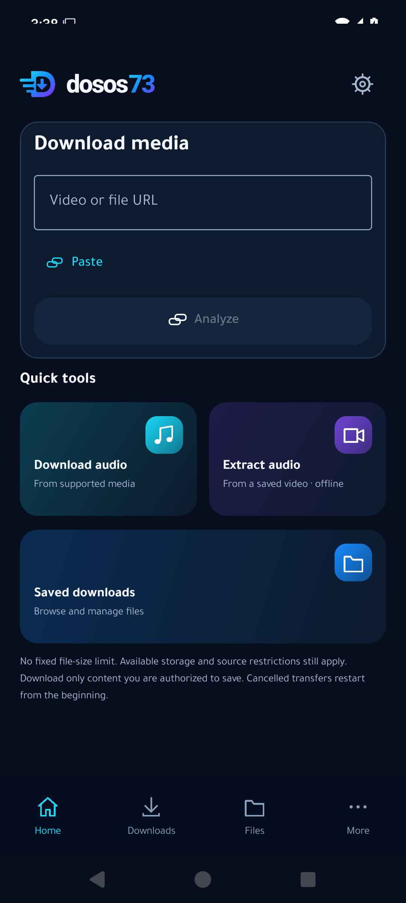

اختر قبل التنزيل
راجع الصيغة والجودة ومجلد الحفظ قبل البدء.
مدير تنزيل مفتوح المصدر لأندرويد
ألصق الرابط واختر الجودة والصيغة. احفظ الفيديو أو الصوت بصيغة MP3، وارجع إلى ملفاتك من مكتبة التطبيق.
راجع الصيغة والجودة ومجلد الحفظ قبل البدء.
يستمر صوت الملف أو الفيديو في الخلفية، مع التحكم من إشعار Android.
تابع طابور التنزيلات وابحث في مكتبتك وشارك الملفات المحفوظة.
افتح أي لقطة لمشاهدتها بالحجم الكامل.



بصمة SHA-256 للحزمة
f5fe7e277d60b003f4c6b987e3c8bf50d227eb42af110099a766cabdfc6871b4